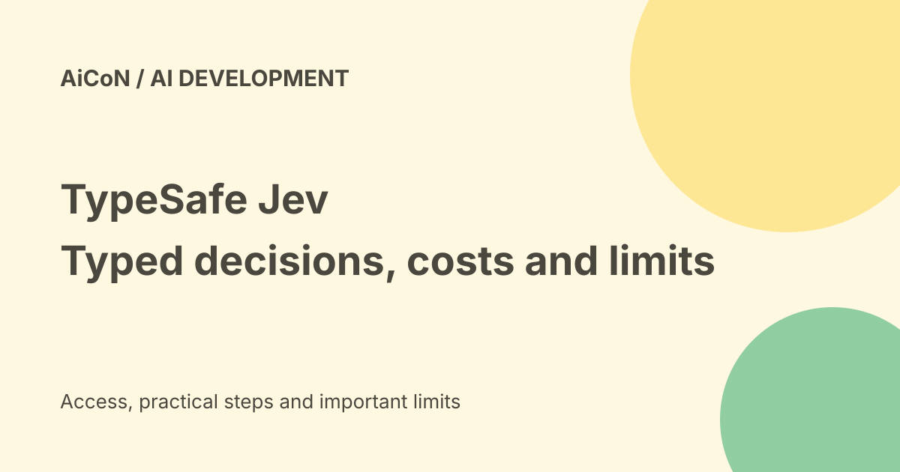

TypeSafe Jev: typed AI decisions, API price and privacy limits
Jev is TypeSafe AI's model for structured decisions inside software, not a chatbot. Current docs list Jev 1.13 and a price of $0.042 per million input tokens, with output tokens free. Vercel offers a gateway route as well as TypeSafe's direct service.

What it is for
Jev takes text state plus developer-defined questions and returns structured answers. Think of sorting a request into a category, scoring a record against a rubric or estimating whether a statement is true. It does not generate normal prose answers like a chat assistant.
TypeSafe calls this a System One model and says it trains with Reinforcement Learning for Calibrated Decisions, or RLCD. These are the company's descriptions of its approach, not an independent guarantee that it behaves like a human.
Choice, Score and Noul
- Choice selects an option and returns probabilities and confidence.
- Score rates state against a rubric and returns probabilities and confidence.
- Noul returns a number from zero to one representing the probability of truth.
The archived post said every answer has a confidence score. Current docs make a narrower distinction: Choice and Score have the confidence field, while Noul returns its probability. Multiple questions can be evaluated against shared state in one call, independently and in parallel.
Ask small, clear questions. If a task mixes unrelated factors, split them and combine results in your own code. Testing on examples with known answers matters more than a neat demo.
Current direct model and limits
TypeSafe's checked model page lists jev-1.13.0. Both jev-latest and jev-preview point to it at the time checked. An alias can move; pin a version if your tested thresholds depend on that version.
Direct docs allow 64,000 tokens across state and all questions combined, with a separate 32,000-token limit for state plus the longest question. Input is text only, including strings or structured text values. Images, audio and video need separate conversion before this request.
The page lists 100,000 tokens per second and 80 requests per second, but warns that limits change dynamically. An over-limit request can return a 429 response. Do not promise these limits as a reserved production capacity.
Price: inexpensive is not free
Direct docs quote $42 per billion input tokens, equivalent to $0.042 per million. Output tokens are free. Vercel's Jev page quotes the same input rate. That is a usage price, not a verified free-account allowance, Indian tax-inclusive bill or enterprise quote.
Total cost depends on request size, volume and the chosen provider route. Vercel says evaluation fallbacks bill both stages when triggered. Do not multiply the headline rate without including repeated calls, larger inputs and fallback traffic.
Direct access and Vercel
The official launch on 15 September 2026 described direct early access and a waitlist. Current documentation provides SDKs and a direct API. We did not create an account or confirm that a new direct account receives a key immediately.
Vercel's current catalog offers typesafe-ai/jev as an evaluation model. Its model page lists a 32,000-token context. Keep that gateway catalog limit separate from the direct service's two-part budget.
Vercel documents a TypeSafe-compatible API and an evaluation route. Evaluation through its AI SDK requires version7 or later; the documented modality is not supported through its OpenAI-compatible, Anthropic-compatible or Cohere-compatible endpoints. A standard chat-completions client is therefore not proof of compatibility.
Credentials and billing setup are needed for the selected route. Never paste API keys into public repositories, screenshots or a shared chat. No key, paid call or gateway account was created here.
Speed claims and India
The launch claims end-to-end responses of 70-500milliseconds and large speed gains on suitable decision tasks. The company says its published tests generally ran from West Coast laptops near its service, and notes that a short demo input gives an advantage.
These are company-reported results, not timings measured from India. Test latency and error rates with your own input sizes and concurrency before designing a deadline around them. The launch also says long-term experience is needed to prove price sustainability.
Data and sensitive decisions
Current TypeSafe docs say it does not train on customer requests or responses. Its privacy policy says it collects inputs to provide the service and does not train or fine-tune models on them. That does not mean no storage or no processing by service providers.
The legal page offers zero data retention for enterprise customers. It does not make that a default for every account. We did not verify an exact standard-request retention period or India-only residency. A gateway route can add its own processing and logging terms.
English is the primary training language according to the model docs, with accuracy best there. Test Hindi, Malayalam or other local-language data separately. Strip unnecessary personal details, log the model version, review mistakes and use a human fallback for consequential decisions.
Frequently asked questions
Is this a ChatGPT replacement?
No. It is a decision API, not a general prose-writing assistant.
Does typed mean error-free?
No. Format constraints do not prove the answer is correct.
Can it see a photo directly?
The checked direct docs say text-only input.
Was it benchmarked here?
No. No live API, latency or production-quality test was run.
What changed since the earlier post?
This guide corrects the launch date to 15 September, adds Jev 1.13 and the gateway route, distinguishes output fields and context budgets, and separates no-training promises from retention. The archived waitlist-only and every-answer-confidence descriptions are too broad today.
Sources: Current model specifications · Question types and overview · Official launch · Vercel model pricing · Vercel API route · Vercel evaluation API · TypeSafe legal overview · Privacy policy. Checked 8 October 2026.